美和科技大學

資訊科技發展日新月異
已使人類生活型態產生極大改變
資訊科技更全面影響每一個
學術領域的發展
大量專業資訊科技人才的需求
是國家經濟發展的趨勢
本校有鑑於此
於九十四學年奉教育部核定
成立資訊科技系
以培養學生具備資訊科技之
基本理論及實務能力
為國家培育中基層專業資訊科技人才
隨著少子化的社會趨勢
及樂活族人口的增加
世界各國都積極推動以居家式
、社區式、機構式為主的照護服務模式
利用人員定位、遠距監控等方式
來建構e化、新型態的科技照護服務
美和從事醫護教育已四十餘年
對於健康照護、生技產業及
營養食品之推展不遺餘力
健康產業需要尖端創新的內涵
為了配合本校的特色發展
確立本系在健康產業的
發展方向與專業性
於99學年度將「資訊科技系」
納入健康暨護理學院
以培養健康產業所需之資訊科技
人才為教育目標
為了配合職場人力需求
掌握資訊科技發展趨勢
依據資訊科技的特性與應用
本系課程規劃重視基礎的學理與實作
將課程與證照結合
使學生修習課程後
即具備考照能力
期望學生在四技專業教育之後
有紮實的學理以適應多變的環境
更擁有實用的技術能力
本系定期邀請產業界與學界之專家學者
召開課程規劃委員會
依據專業需求及職場能力訂定相關專業課程
本系以單晶片
網路及多媒體等三類課程為發展健康產業
資訊應用之基礎
為了強化學生專業能力之發展
加入健康產業相關課程
在資訊課程架構下
以健康產業實務應用為發展主軸
達到學以致用之目標
系發展特色為：
(一) 符合專業能力需求之課程設計
(二) 以實務為導向之教學實驗室
(三) 符合就業需求之專業能力發展
(四) 多元化之系知識發展
(五) 重視區域健康照護發展
本系配合國家發展
結合健康產業結構需求
規劃理論與實務兼顧之連貫課程
經由完整的教育訓練
提高學生的自我價值與專業能力
依據課程設計
本系畢業學生可擔任之工作如下表所示
有志進修的同學
畢業後可報考國內外資訊科技或健康照護等
相關研究所
| 課程分類 | 工作名稱 | 代表性工作職稱 |
| 嵌入式系統課程 | 1.軟體設計工程師2.系統程式設計工程師 | 電腦程式設計人員 |
| 多媒體課程 | 1.網頁設計工程師2.影像處理工程師3.資料庫開發工程師 | 多媒體設計人員 |
丟丟銅
屏東縣內埔鄉學人路531-4號
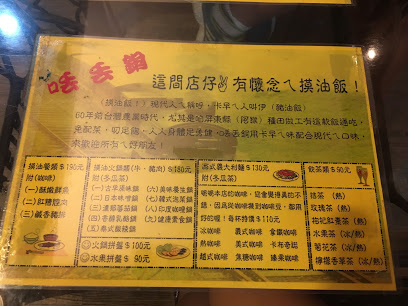 地圖
阿鳴嫂傳統客家菜
屏東縣內埔鄉和興村學人路620號
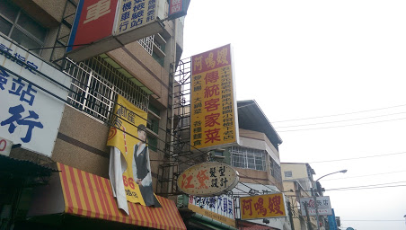 地圖
21金小火鍋/臭臭鍋
屏東縣內埔鄉學人路640號
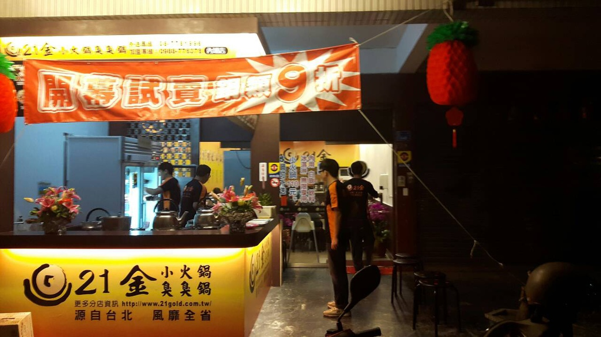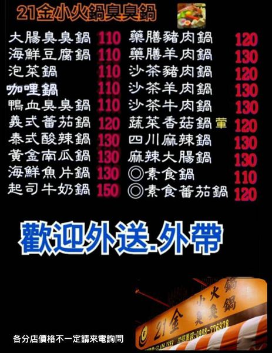 地圖
白面東極品楊桃汁-屏東內埔店
屏東縣學人路509號
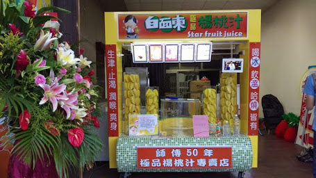
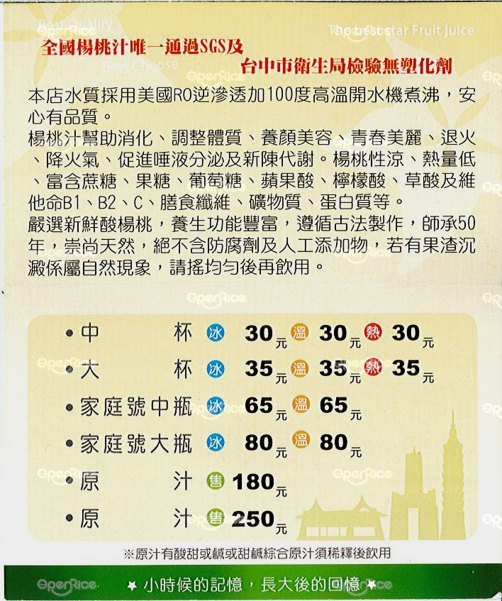 地圖
菓語食點-果汁輕食專賣店
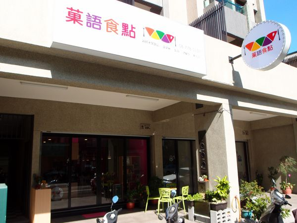 地圖
美華泰MIRADA 內埔店
全聯福利中心
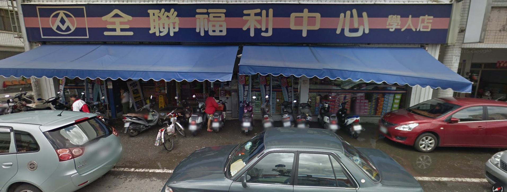 地圖
順發3C量販
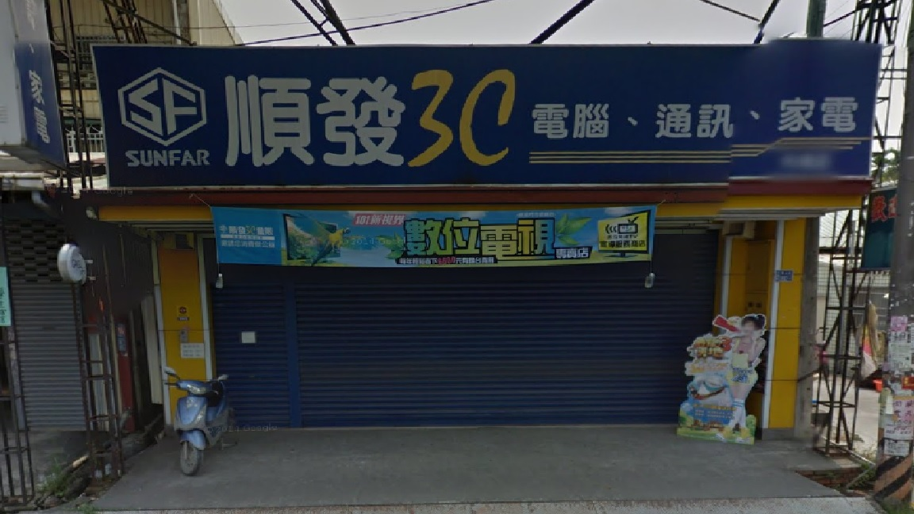 地圖
燦坤3C
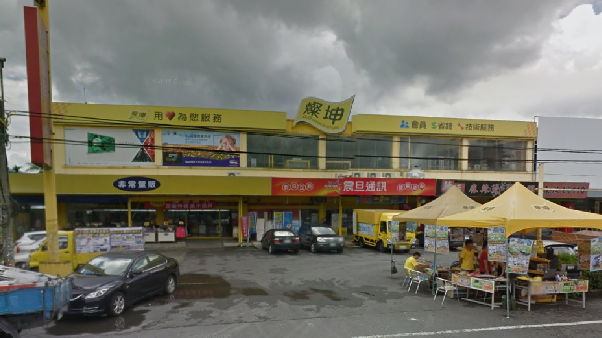 地圖
101文具天堂
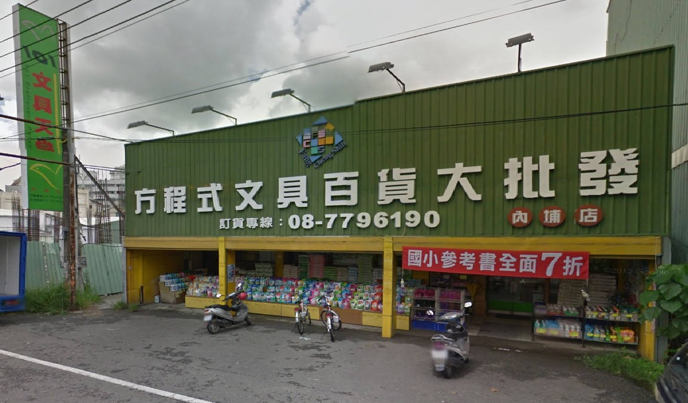 地圖